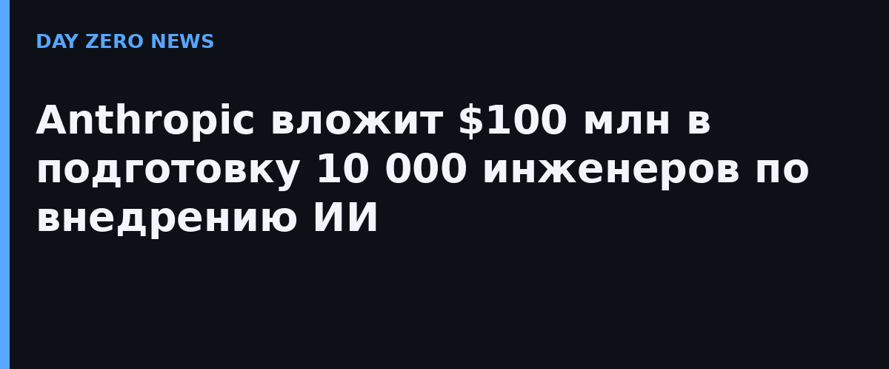

Anthropic называет главную боль корпоративного ИИ — не модели, а люди: специалистов, умеющих встроить ИИ в реальные бизнес-процессы, сейчас не хватает рынку. Программа построена по «медицинской» модели: стажёры учатся у практикующих инженеров Anthropic, отрабатывают на реалистичных кейсах и держат экзамен, прежде чем «пойдут в самостоятельную практику». Каждого участника выдвигает его компания, и приезжает он с конкретным проектом на Claude, который сам же и поведёт после возвращения.
Сначала — многодневной очный интенсив в Сан-Франциско, Нью-Йорке или Лондоне: от выбора юзкейса через проверку безопасности к передаче в эксплуатацию, с финальным аттестационным заданием на новом сценарии. Сдавшие получают бейдж Claude Resident Engineer и переходят в 12-недельную резидентуру, где ведут реальный кейс у себя в компании при поддержке инженеров Anthropic. По итогам — вторая аттестация и бейдж Claude Frontier Deployed Engineer; первых таких выпускников ждут в начале 2027 года.
В первых потоках — инженеры Accenture, Bain, Capgemini, Commonwealth Bank of Australia, Deloitte, McKinsey, Morgan Stanley и Novo Nordisk. В компании подчёркивают: опыт сборки ИИ-агентов не обязателен, важны сильная инженерная база и опыт работы с LLM. Academy опирается на Claude Partner Network: там уже 46 000 компаний, более 175 000 выданных сертификатов Claude и около 4 000 выпускников интенсивного курса Basecamp.
$100 млн — ставка на то, что деньги в корпоративном ИИ упираются в «последнюю милю»: пилоты запускают все, а доводят до продакшена единицы. Готовя инженеров внутри клиентов и интеграторов по стандарту собственных команд, Anthropic фактически растит себе канал внедрения — конкуренты Anthropic, Google и OpenAI бьются за те же кадры, и рынок курсах по промптинге здесь уже не выигрывается.